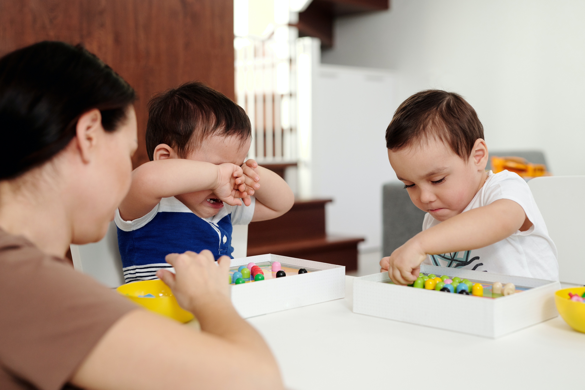

de Noelia Muñoz
La etapa egocéntrica en los niños puede ser percibida gracias a estas manifestaciones:
- Realismo: se confunde el mundo inmaterial con el mundo material, es decir, lo interno con lo externo. Se podría utilizar como un ejemplo de realismo, un niño que cree que sus sueños están fuera de su cuerpo.
- Animismo: los niños le dan vida a objetos que no la tienen. Por ejemplo, cuando creen que un objeto inanimado como es el sol, desaparece ya que se ha ido a dormir.
- Artificialismo: creen que todas las cosas se crean por voluntad humana, pensando que todos los elementos que se encuentran en la naturaleza están fabricados a propósito. Un ejemplo de está manifestación es cuando los niños creen que la verdura procede directamente del supermercado.
- Fenomenismo: es la tendencia que tienen los niños de relacionar dos fenómenos que ellos consideran próximos. Por ejemplo, hablamos de fenomenismo cuando un niño cree que por tener hambre es suficiente para que llegue la hora de la comida.
- Fenomenismo: es la tendencia que tienen los niños de relacionar dos fenómenos que ellos consideran próximos. Por ejemplo, hablamos de fenomenismo cuando un niño cree que por tener hambre es suficiente para que llegue la hora de la comida.
- Finalismo: los niños suelen creer que cada objeto tiene una función y un objetivo que justifican su existencia y sus características. Hablamos de finalismo en casos como cuando un niño cree que las nubes se desplazan ya que tiene que llover en otro lado.
